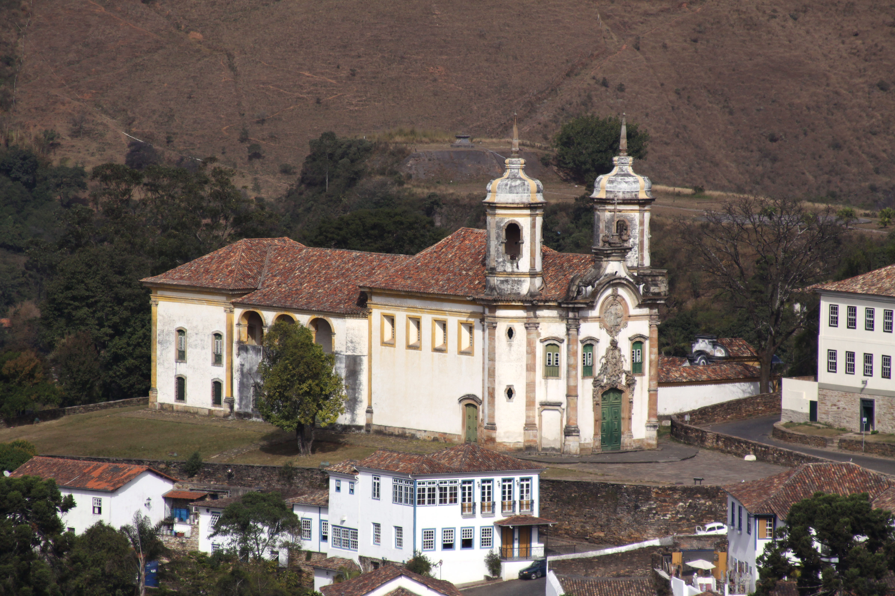
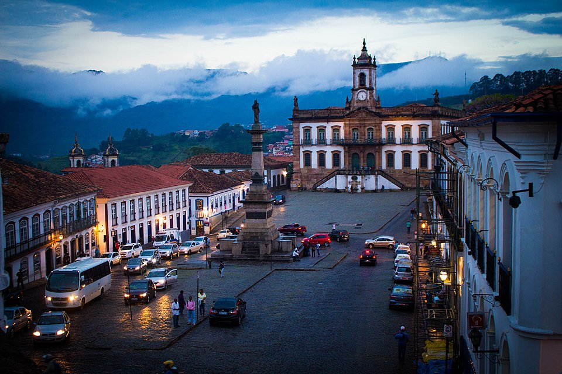
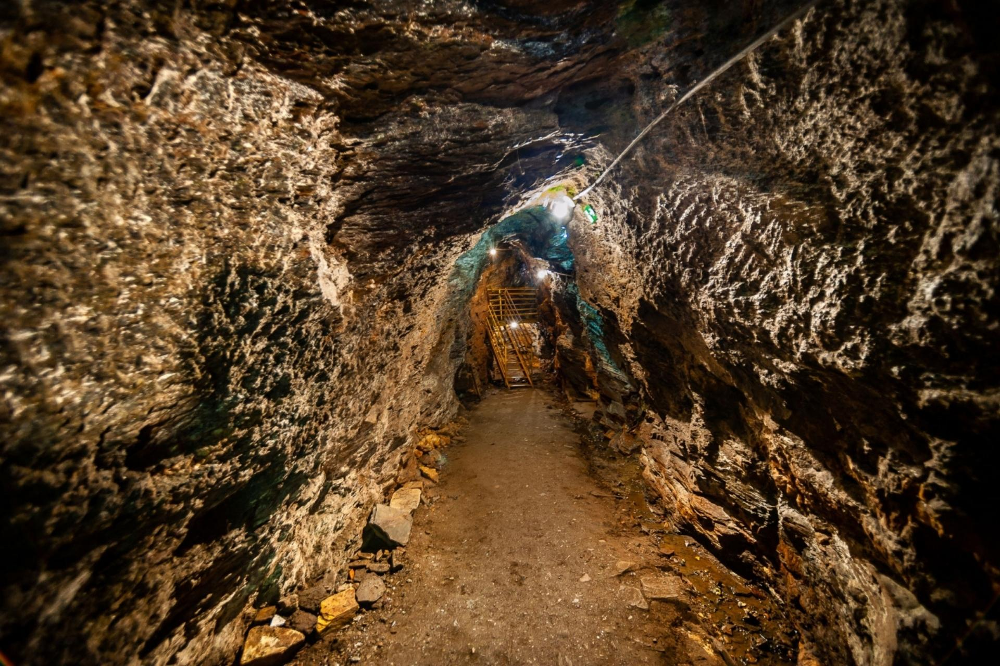
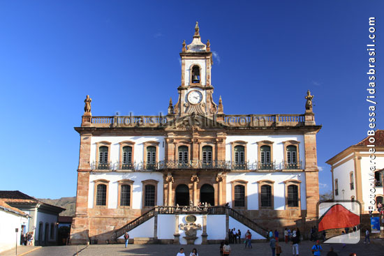

Conheça os principais atrativos

Igreja de São Francisco de Assis
Considerada uma das maiores obras do barroco brasileiro, possui arquitetura de Aleijadinho e pinturas de Mestre Ataíde.

Praça Tiradentes
Principal cartão-postal da cidade e palco de importantes acontecimentos históricos.

Mina da Passagem
A maior mina de ouro aberta à visitação do mundo, com passeio de trolley.

Museu da Inconfidência
Um dos museus mais importantes do Brasil, dedicado à história da Inconfidência Mineira.